MICROSOFT 365 COPILOT 博客
Microsoft 365 Copilot 新功能速覽 | 2026 年 7 月
本文為 Microsoft 365 Copilot 官方月度更新（2026 年 7 月刊）的中文整理版。每月我們都會梳理新增功能與改進，幫助 Microsoft 365 客戶及時瞭解 Copilot 的最新能力，讓用戶在日常所用的應用中更高效地完成工作。
面向用戶的能力
在 Copilot Chat 中添加代理
7 月已推出用戶現在可以把 Word、Excel 和 PowerPoint 代理直接添加到 Copilot Chat 的提示詞中。打開 Copilot 後，只需通過 @ 提及相應代理即可將其加入對話，從而不用離開 Copilot 應用就能創建文檔、電子表格和演示文稿。
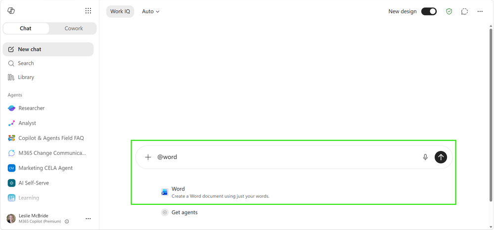
Copilot 應用：模型更新、搜索增強與推送通知
- OpenAI GPT-5.6 系列模型上線7 月已推出
GPT-5.6 系列模型現已在 Microsoft 365 Copilot 中可用。該系列針對 Microsoft 365 中的知識工作進行了優化，在複雜的多步驟任務上具備更強的推理能力：幫助 Copilot 在 Word 中把初步想法打磨成成熟草稿、在 Excel 中完成更深入的分析推理、在 PowerPoint 中生成更豐富的演示文稿、在 Chat 中給出更清晰的回答，並在 Cowork 中把端到端的交付物貫徹到底。結合用戶的工作上下文接地，GPT-5.6 讓 Copilot 更能勝任知識工作的複雜性。 - Anthropic Claude Sonnet 5 上線7 月已推出
Claude Sonnet 5 現已在 Microsoft 365 Copilot 中可用。該模型專為代理式的多步驟工作設計，適合起草文檔、分析電子表格和製作演示文稿等任務，目前已在 PowerPoint、Word 和 Cowork 中的 Copilot 裡提供。它進一步擴充了 Copilot 的模型陣容，讓人們能夠為手頭任務挑選最合適的模型。結合 Work IQ，Copilot 會基於文件、會議、聊天和業務數據接地，交付與用戶工作上下文高度相關的結果。 - Copilot Search 中的答案優化7 月已推出
Copilot Search 模塊中的 Copilot 答案有了新的改進，幫助組織更有針對性地用好 Copilot：答案更加簡潔；同時更醒目地提示用戶可以在側邊欄的 Copilot Chat 中繼續對話。這帶來了更順暢的用戶體驗、更少的手動操作，也為 IT 團隊推進部署與採用提供了更清晰的路徑。 - 移動端推送通知7 月已推出
Microsoft 365 Copilot 移動應用新增推送通知，幫助 iOS 和 Android 用戶快速掌握待辦事項，無需在 Outlook、Teams 等多個 Microsoft 365 應用之間來回手動查看。用戶會收到諸如「今日概覽（Your Day at a Glance）」和「等待你處理的事項（Items waiting for you）」等相關提示詞的推送；點開通知後會跳轉到 Copilot 移動應用，對應的回覆內容已經呈現在屏幕上。該功能僅面向持有 Microsoft 365 Copilot 許可的用戶。
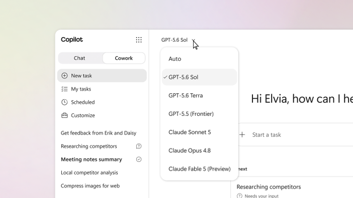
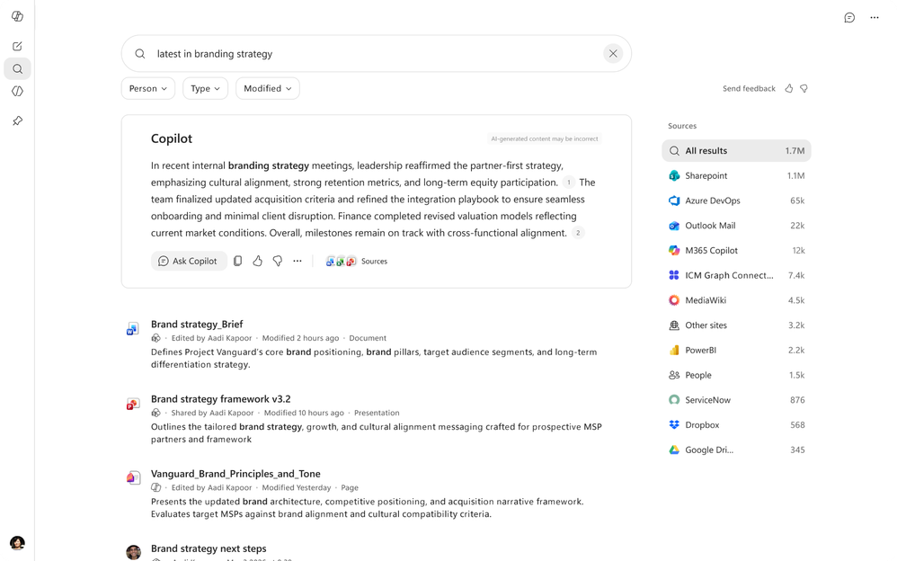
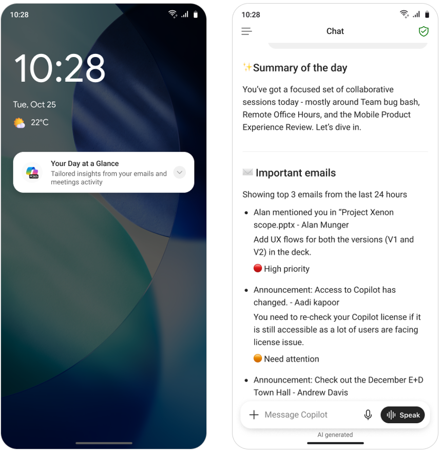
Cowork：模型更新與全新工作方式
- Anthropic Claude Fable 5 上線7 月已推出，默認關閉
Claude Fable 5 現已作為模型更新在 Copilot Cowork 中提供，面向需要處理更長、更復雜工作的用戶。據 Anthropic 介紹，Claude Fable 5 專為雄心勃勃的長週期項目而構建，具備更強的持續推理能力、更深的上下文處理能力，並能夠在多階段任務中規劃、執行並自查工作成果。在 Cowork 中，這為需要更強持久性和深度的代理式工作提供了又一個模型選項，用戶可以在更少的逐步監督下委派複雜工作流，同時始終紮根於自身的工作上下文。 - 基於 Microsoft Edge 的本地瀏覽器自動化7 月已推出
已登錄 Edge 的用戶可以讓 Cowork 在他們日常使用的各類 Web 系統中辦事，例如 SaaS 工具、內部門戶等。由 Cowork 代為在網站間執行操作，用戶就不必花大量時間手動切換標籤頁。 - 事件觸發式任務7 月已在 Frontier 推出
有了事件觸發式任務，用戶不必再頻繁刷新收件箱、擔心漏掉重要提醒。用戶可以讓 Cowork 盯著郵件和 Teams 中真正要緊的動態，在消息抵達的瞬間捕捉到，並在用戶開口之前就準備好回應。觸發條件可以是某個發件人、一次 @ 提及、某個關鍵詞或話題，或是某個事件名稱；用戶只需用日常語言描述觸發條件，任務就會在 Teams 聊天與頻道、Outlook 郵件和會議中執行。 - 用技能和插件定製 Cowork7 月已推出
通過技能和插件，用戶可以輕鬆定製 Cowork 並把它延伸到自己依賴的各個系統中。現在，在「自定義（Customize）」選項卡里，用戶可以通過引導式的「新建」流程添加技能，或者把已有的 .md、.zip、.skill 文件拖放到「上傳技能」中。插件的用法相同：Claude 或 Open-Plugin 的 zip 包會被自動轉換成可發佈的包，幷包含隨附的技能和 MCP 連接器。這既減少了手動配置，也讓分享變得簡單——用戶可以把任意技能或插件分享給組織內的特定人員，同時保留所有權，此後每次修改都會自動同步給對方。
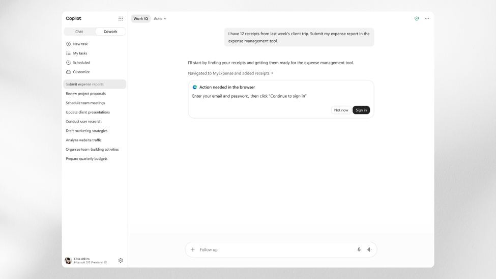
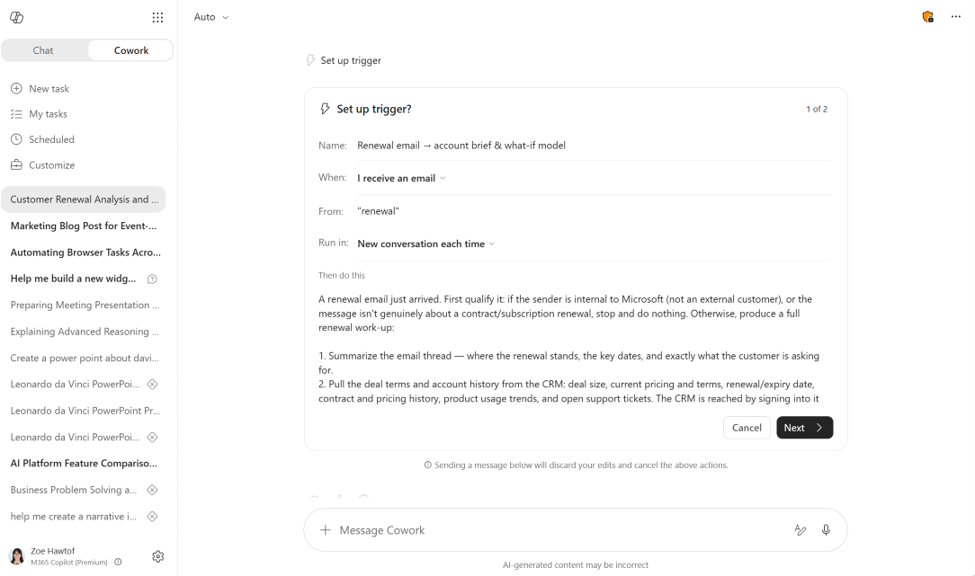
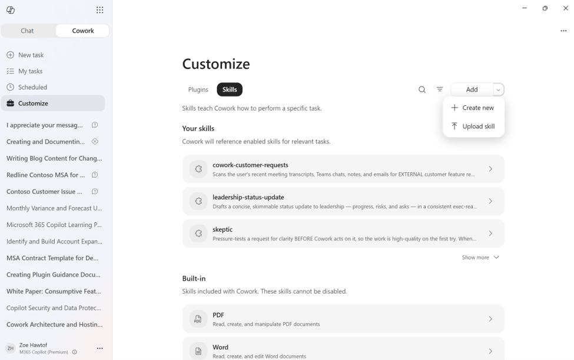
Copilot Notebooks：支持更多引用文件格式
TXT/RTF 7 月已推出Markdown 8 月推出Copilot Notebooks 現已支持把 Markdown（.md）、TXT（.txt）和 RTF（.rtf）文件作為筆記本引用源，幫助組織對更多項目上下文進行推理。用戶可以把軟件文檔、視頻轉錄、富文本筆記等內容直接添加到筆記本中，再用 Copilot 把這些輸入轉化為實用的項目產出物。
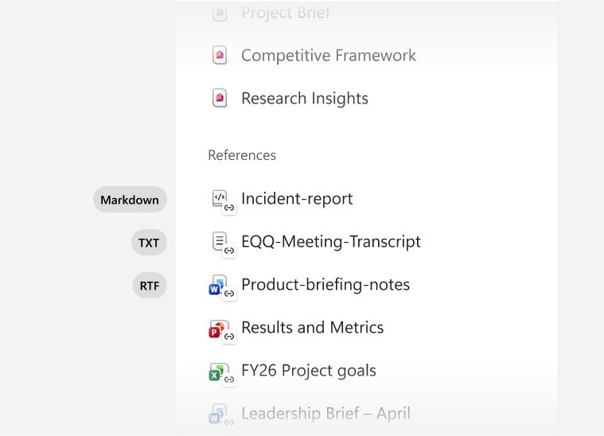
Word 中的 Copilot：審閱與起草工作流
審閱工作流6 月已推出
藉助 Word 中 Copilot 的審閱工作流，用戶可以在開啟「修訂跟蹤」的狀態下編輯文檔，讓每一處擬議修改都清晰透明、便於審閱。由於改動默認可見，用戶可以輕鬆查看並逐條批准。用戶還可以讓 Copilot 添加、閱讀、回覆和管理批註，讓反饋條理清晰、並始終關聯到正確的內容位置。
起草工作流7 月已推出
Copilot 現在可以插入和更新目錄，讓文檔在不斷演進的過程中始終保持條理。它還能協助管理頁眉、頁腳、頁碼、日期和腳註，使文檔排版更省事，用戶無需手動操作即可保持文檔的專業與整潔。
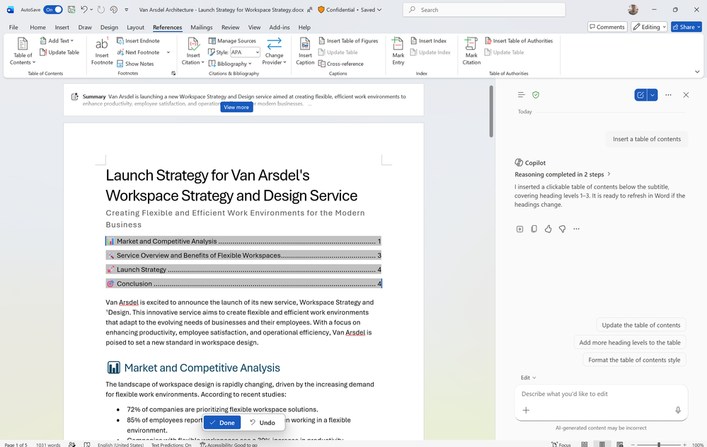
Excel 中的 Copilot：新技能與 Power BI 上下文
- 品牌套件技能（Brand kit skill）7 月已推出
該技能讓 Excel 中的 Copilot 能夠使用 Microsoft 365 品牌中心（Brand Center）裡的組織品牌套件來格式化工作簿，自動把批准的配色、字體和徽標應用到表格和圖表上，確保每一份報表都符合公司的品牌規範。用戶只需調用品牌套件技能並讓 Copilot 為表格套用品牌樣式，即可得到精美、符合品牌、可直接用於彙報的報表，全程無需手動排版。 - 主題設計技能（Theme design skill）8 月推出
用戶現在可以為數據應用一套協調的設計主題：選擇和諧的配色方案、美化圖表並規劃版式佈局，讓關鍵洞察脫穎而出。使用 @theme-design 技能並讓 Copilot 設計或美化表格，它會輸出層次分明的格式，把原始數據變成乾淨易讀的報表，省去手動設計的工夫。 - 基於受治理的 Power BI 數據進行分析8 月推出
Excel 中的 Copilot 現在可以基於受治理的 Power BI 數據開展分析，把可信的業務指標直接帶入 Excel 網格。用戶可以從工作內容選擇器中附加一份 Power BI 報表，然後讓 Copilot 分析業績表現、識別趨勢，並在 Excel 中構建摘要或支撐性計算。Copilot 直接處理報表的底層數據，同時遵循既有的行級安全性（RLS），用戶無需導出數據、手動複製核對數字，也不必在 Power BI 與 Excel 之間來回切換。 - 覆蓋更多雲端工作簿8 月推出
Excel 中的 Copilot 現已支持更多保存在雲端的工作簿，包括 Windows 和 Mac 上關閉了「自動保存」的文件。此前 Copilot 要求必須開啟自動保存，導致部分本應受支持的工作簿無法使用。現在，當自動保存關閉且工作簿存在未保存的更改時，Excel 會在 Copilot 開始修改之前提醒用戶開啟自動保存，以保護尚未保存的成果；用戶也可以選擇不開啟自動保存、直接繼續使用 Copilot。
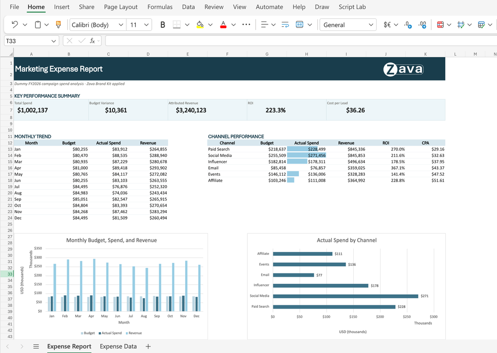
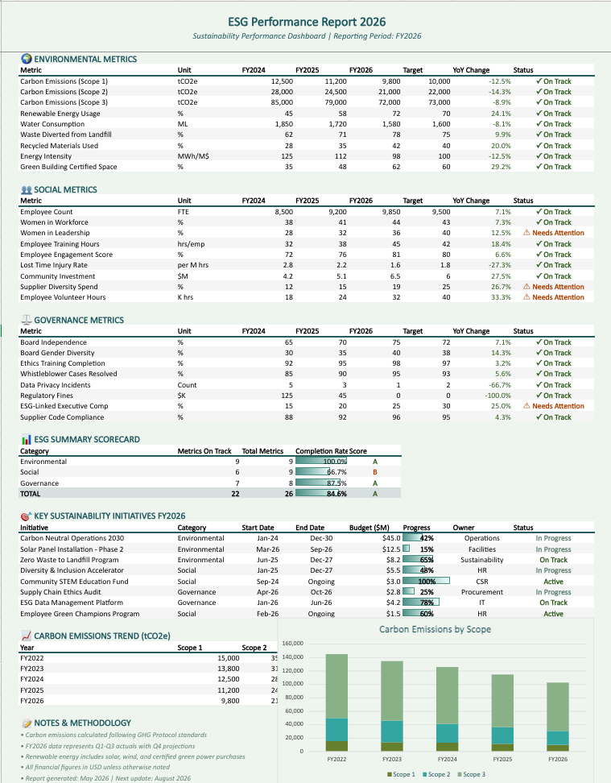
PowerPoint 中的 Copilot：品牌素材、自定義技能等
- 使用公司品牌素材7 月已推出
用戶現在可以在 PowerPoint 的 Copilot 中直接使用來自 Microsoft 365 品牌套件的公司品牌素材，包括徽標、圖標、主題和字體。品牌管理者可以安全地更新和分發首選品牌套件，確保公司各類素材的設計風格保持統一。用戶可以在 PowerPoint 內選擇公司模板並套用品牌配色、圖片和圖標，製作符合品牌規範的演示文稿。 - 自定義用戶技能8 月推出
PowerPoint 中的 Copilot 現已支持自定義用戶技能，用戶可以在 OneDrive 中創建、上傳和更新自己的技能。技能把重複的指令轉化為可複用的指導，Copilot 會在製作演示文稿的工作流中隨時應用。 - 撰寫、回覆和解決批註7 月已推出
PowerPoint 中的 Copilot 現在可以在演示文稿內直接撰寫、回覆和解決批註。用戶可以讓 Copilot 起草新批註、回應已有反饋，或關閉已處理完畢的批註串，全程無需切換上下文。這讓整理幻燈片反饋更容易、評審推進更快，協作也更省力。 - 在批註中分配任務並通知相關人員8 月推出
用戶很快就能通過 PowerPoint 中的 Copilot 在批註裡分配任務並通知相關干係人。用戶可以讓 Copilot 把反饋轉化為指派出去的後續事項，並直接從批註串中把合適的人拉進討論。這幫助團隊更快地從「收到反饋」推進到「付諸行動」，讓演示文稿評審保持有序，也減少了跨干係人跟蹤下一步所需的人工投入。 - iOS 手機與 iPad 端能力增強7 月已推出
PowerPoint 中的 Copilot 在 iOS 移動端和 iPad 上新增了幾項關鍵能力：第一，Copilot 現在可以規劃創建、編輯、分析等多步驟操作；第二，Copilot 既能基於當前幻燈片進行隱式接地，也能基於附加的文件進行顯式接地；第三，為支持移動辦公場景，用戶可以在 Copilot 後臺工作的同時繼續操作或切換到其他應用。 - 以另一份演示文稿為參考進行創建或改版6 月已推出
用戶現在可以把某份演示文稿作為參考，來新建演示文稿或為現有文稿更換風格。用戶既可以附加一個 PowerPoint 文件作為參考，也可以打開一份演示文稿並讓 Copilot 參照它的視覺風格來創建新文稿或改造現有文稿。Copilot 會套用參考文稿的版式、主題和視覺體系，產出風格統一、外觀精美的成果。這讓用戶可以輕鬆複用經過驗證的設計、讓內容對齊品牌規範，並在無需手動重排的情況下匹配既有演示文稿的觀感。
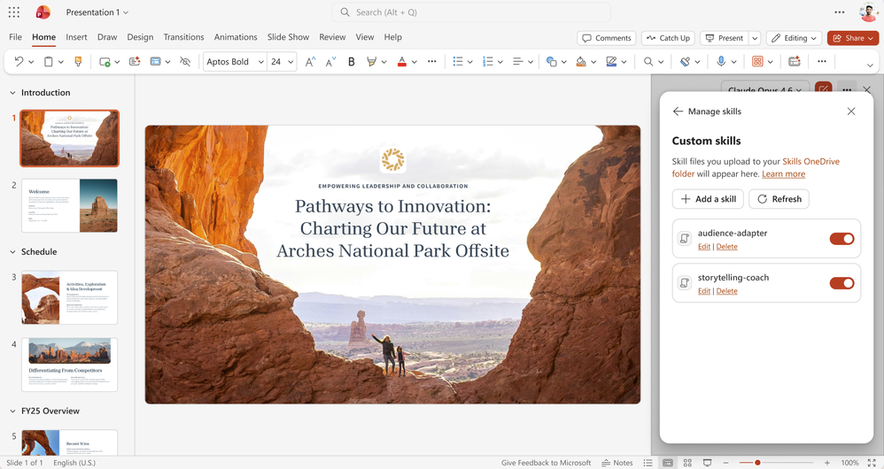
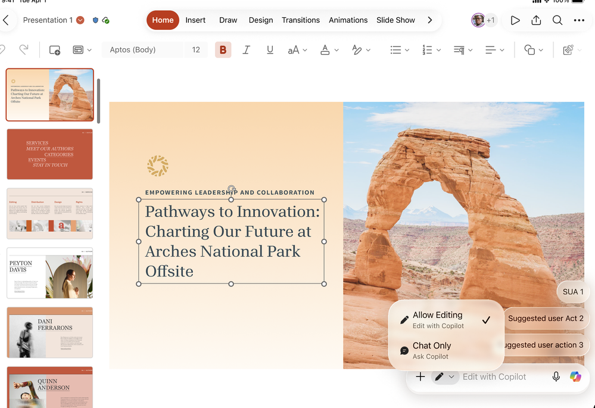
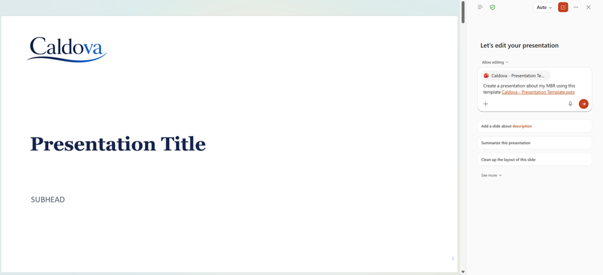
Teams 中的 Copilot：會議回顧應用
7 月已推出全新的「會議回顧（Meeting recaps）」應用把 AI 生成的會議回顧集中到一個便捷的應用中，並可固定在 Teams 側邊欄，方便用戶查找回顧內容、快速補齊進度。用戶可以使用快捷篩選器迅速定位到關心的會議，瀏覽和回看過去 30 天內帶有回顧的會議，或者生成音頻回顧，隨時隨地收聽會議要點。
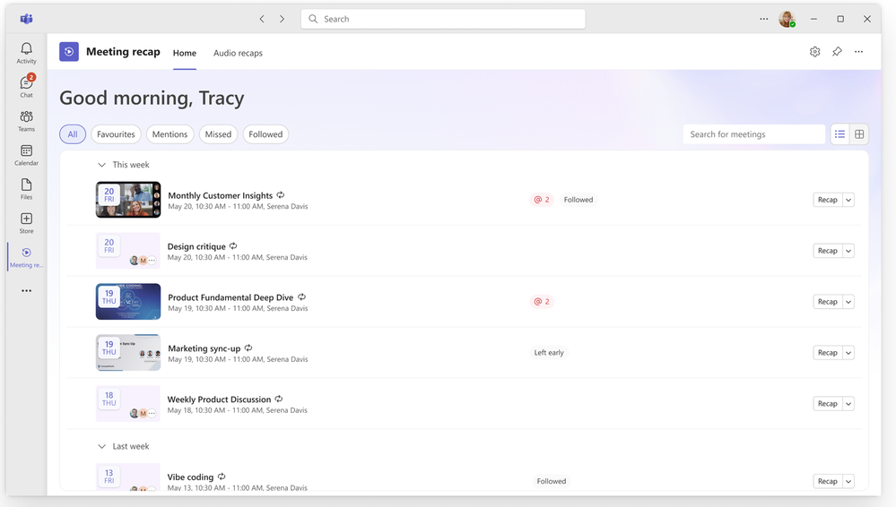
SharePoint 與 OneDrive：訪問熱力圖、AI 摘要與文檔生成
代理訪問洞察熱力圖7 月已推出
面向 SharePoint 和 OneDrive 站點的全新「代理訪問洞察（Agent Access Insights）」熱力圖，幫助組織更有針對性地用好 Copilot。它以可視化熱力圖的形式呈現代理活動，便於管理員快速發現規律、熱點區域和異常訪問行為，在提升用戶體驗、減少人工排查的同時，為 IT 團隊推進部署與採用提供更清晰的路徑。
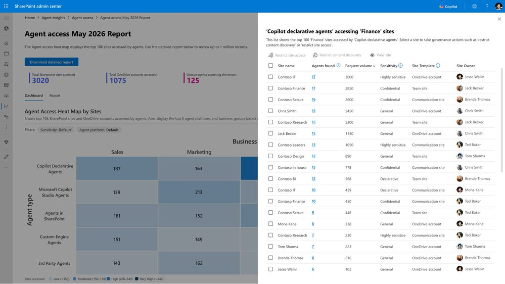
SharePoint 新聞的 AI 音頻摘要6 月已推出
用戶可以在 Teams 版 SharePoint 應用（Viva Connections）中收聽由 AI 生成的 SharePoint 新聞貼文音頻摘要，從而更高效地獲取新聞更新，在不打斷日常工作節奏的前提下保持信息同步。
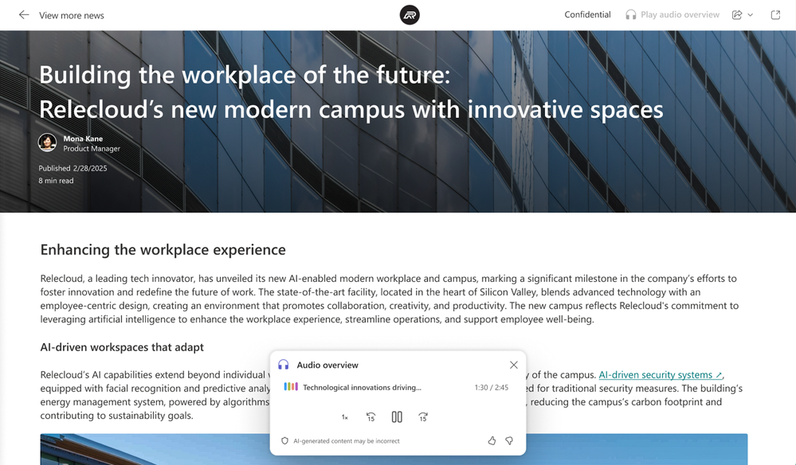
通過 Power Automate 基於表單生成文檔6 月已推出
用戶現在可以在 SharePoint 中藉助 Power Automate 使用表單生成文檔。新增的 Power Automate 操作支持基於 SharePoint 中的文檔生成（DocGen）表單自動生成文檔；「從表單生成文檔（預覽版）」允許客戶把數據輸入映射到模板中預定義的字段，從而由模板生成文檔。
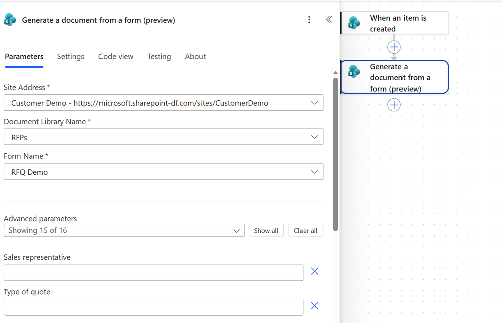
更多 Copilot 連接器
7 月已推出更多 Copilot 連接器現已可用，在遵循既有安全、合規和權限設置的前提下，把行業專屬知識直接帶入工作流。連接器讓用戶能夠檢索、推理並基於組織既有業務系統中的數據採取行動。新增連接器覆蓋多個行業：
| 行業 | 連接器 |
|---|---|
| 金融服務 | Daloopa、FactSet、Fitch Solutions、Morningstar、PitchBook、S&P Global |
| 專業服務 | Dice、Forrester、HG Insights |
| 工業與製造 | Infor Nexus、Sight Machine |
| 軟件與科技 | Granola |
| 醫療健康與生命科學 | Article Galaxy、Nyquist AI |
| 零售與消費品 | Passby Pulse、Polar Analytics |
| 跨行業 | CB Insights、Sprouts.ai |
用戶現在可以直接從「添加和管理數據源」菜單中發現並連接數據源，還可以把提示詞的範圍限定到某個特定連接器，以獲得更有針對性的結果。把專業化的企業數據接入 Copilot 後，組織能夠幫助員工在各類 Copilot 體驗中獲取更相關的洞察、更豐富的上下文和行業專屬知識。這些連接器現已正式發佈，可由管理員進行管理。
美國政府 DoD 雲支持連接器6 月已推出
美國政府 DoD 雲中的組織現在可以通過 Microsoft 自建的連接器（包括 Atlassian Jira 和 Confluence）把外部業務系統中的知識直接引入 Copilot。這些連接器此前已在 GCC 和 GCC High 中可用，能夠接入 CRM、數據庫、文檔庫和其他企業應用中的業務數據，讓 Copilot 獲取員工日常依賴的更多信息，從而給出更相關、更準確、更有據可依的回答，減少跨系統檢索的時間。內容會被安全地索引到 Microsoft Graph，並始終保留在組織的 Microsoft 365 租戶邊界之內；既有的權限、合規策略和安全管控繼續對訪問生效，幫助組織滿足安全、隱私和數據駐留方面的要求。
面向 IT 管理員的能力
Microsoft 管理中心的新管控與報表
- Web 接地的域名排除7 月已推出
組織現在最多可以把 1,000 個指定域名排除在 Copilot 的 Web 接地結果之外。這有助於限制特定網站的內容進入 Copilot 的網絡檢索，降低迴答受到不良或不合規來源影響的可能性，同時也讓管理員對基於 Web 接地的內容有更強的監督能力。 - DLP 限制引用外部郵件6 月已進入公開預覽
該能力讓組織對郵件數據在 Copilot 回覆中的使用方式擁有更強的控制力。我們正在擴展面向 Microsoft 365 Copilot 和 Copilot Chat 的 Microsoft Purview DLP，以阻止引用外部郵件。管理員現在可以排除來自外部發件人的郵件，使其不被摘要、引用或用作回覆的接地數據。 - Insights 中的 Agent 365 儀表板7 月已推出
Agent 365 儀表板幫助業務負責人跟蹤本團隊的代理使用與採用情況；分析師還可以藉助組織篩選功能，用它做全組織範圍的報表。該儀表板整合了來自 Agent 365 的數據，讓負責人跨不同來源和代理類型全面掌握團隊的代理使用情況：可按用戶組查看採用率、跟蹤留存、識別熱門代理、比較使用趨勢，從而更好地指導代理的部署策略與優化方向，也可以下鑽到單個代理的使用情況獲取更深入的洞察。同一儀表板中還可通過開關查看 Copilot Studio 代理的歷史報表。 - Copilot 連接器使用情況報表6 月已推出公開預覽
Microsoft 365 管理中心新增的 Copilot 連接器使用情況報表現已進入公開預覽，幫助 IT 管理員瞭解 Copilot 用戶從已連接的企業知識中獲得了哪些價值。報表會顯示 Copilot Chat、Copilot Search 和各類代理的回覆中，有多大比例是基於組織已部署連接器的內容接地生成的，讓管理員更清楚地看到連接器的採用度、參與度、使用模式以及各連接器帶來的影響。管理員可據此評估哪些已連接數據源真正產生了價值，並持續優化連接器部署策略。 - GCC / GCC High / DoD 的 Copilot Chat 使用情況報表7 月已推出
面向 GCC、GCC High 和 DoD 客戶的 Copilot Chat 使用情況報表現已在 Microsoft 365 管理中心提供，幫助客戶瞭解並推動 Copilot Chat 的採用。管理員可以查看組織級用量以跟蹤趨勢，也可以查看用戶級明細以支撐 Microsoft 365 Copilot 的許可決策。報表包含活躍用戶總數、按 Microsoft 365 應用細分的 Copilot Chat 使用情況，以及用戶級活動洞察（默認匿名化）。 - 成本管理更新7 月已推出
Microsoft 365 管理中心的成本管理功能在告警可靠性、策略執行清晰度、超額處理和 Copilot 額度可見性方面均有改進，讓管理員更有把握地監控和管理 Cowork、Work IQ API 等服務的 AI 消耗成本。主要改進包括：- 告警更可靠：當消耗接近策略閾值時，管理員能夠及時獲知並迅速採取行動。作為本次更新的一部分，對於需要通知的既有支出策略，管理員應重新創建告警。
- 支出策略邏輯更清晰：當用戶同時受多條支出策略約束時，將保留在人均限額最高的那條策略上；即便達到該限額，用戶也不會被切換到其他策略。
- 超額處理更合理：用戶在執行任務過程中觸達支出策略限額時，可以完成當前任務而不會產生計費超額。這部分超額不予計費，也不會在成本管理報表中顯示為已消耗額度。
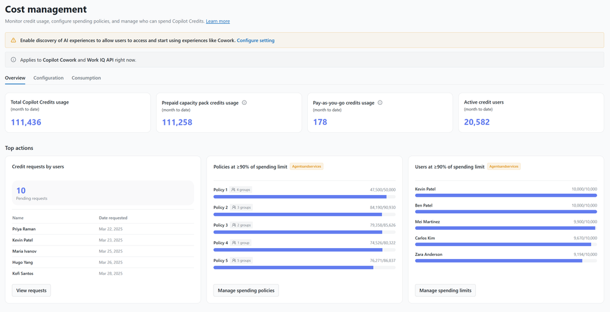
Microsoft 365 管理中心的成本管理
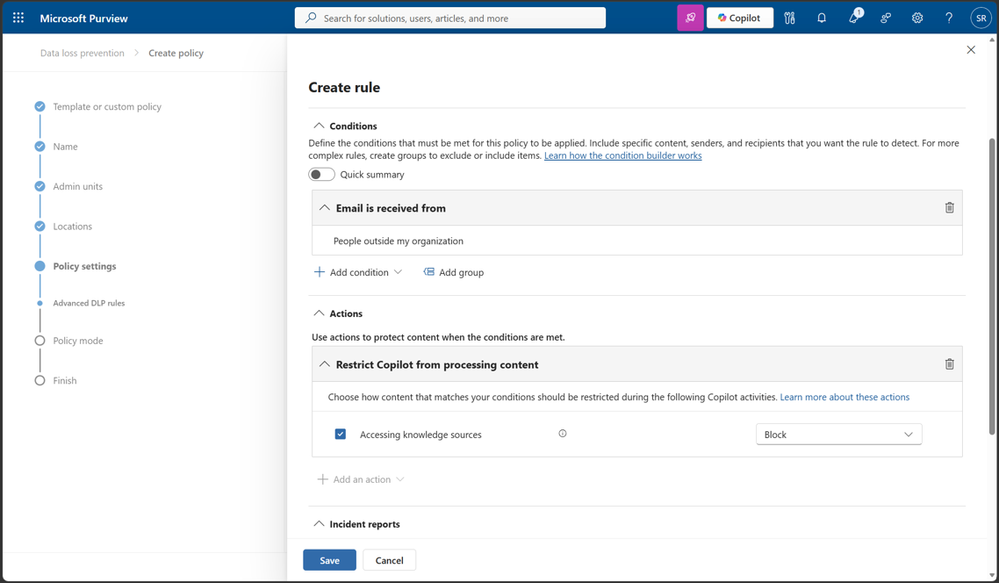
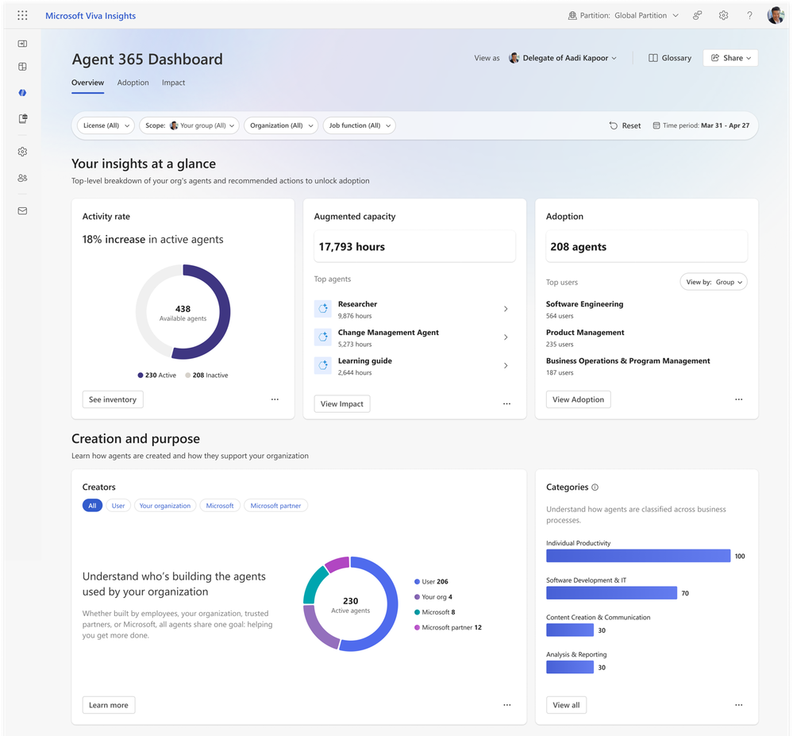
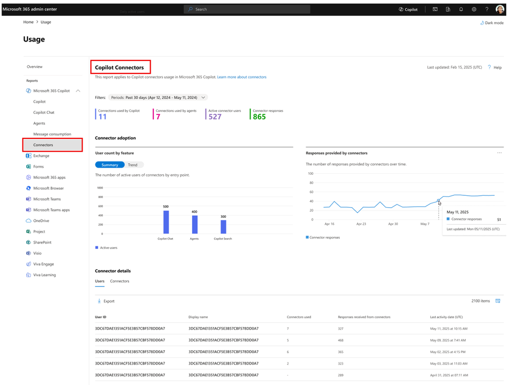
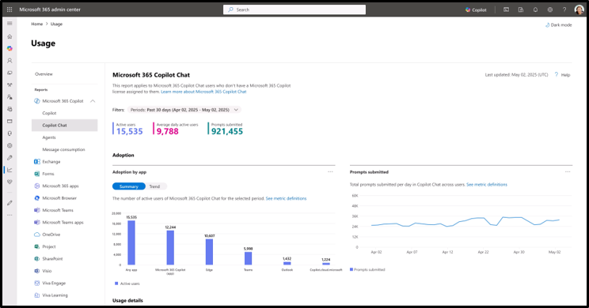